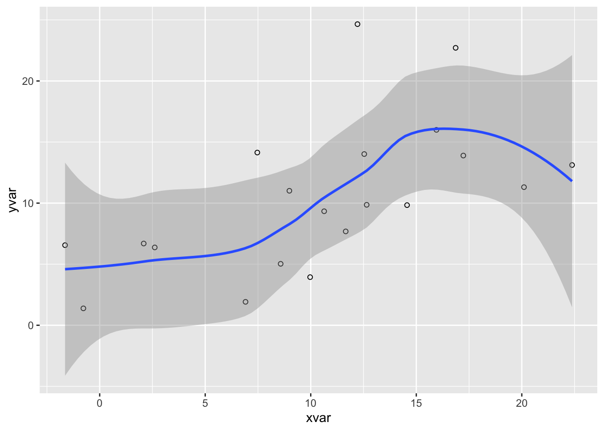
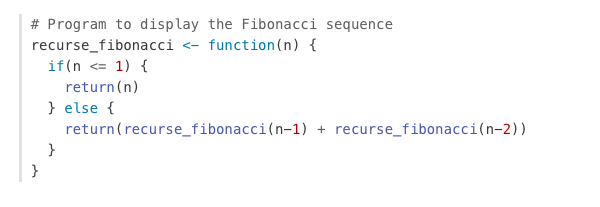
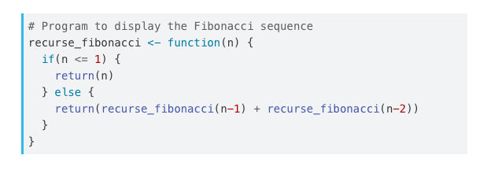

Pandoc will automatically highlight syntax in fenced code blocks that are marked with a language name.
You can specify the code highlighting style using highlight-style and specifying one of the supported themes. Supported themes include: arrow, pygments, tango, espresso, zenburn, kate, monochrome, breezedark, haddock, atom-one, ayu, breeze, dracula, github, gruvbox, monokai, nord, oblivion, printing, radical, solarized, and vim.
For example:
highlight-style: github
Highlighting themes can provide either a single highlighting definition or two definitions, one optimized for a light colored background and another optimized for a dark color background. When available, Quarto will automatically select the appropriate style based upon the code chunk background color’s darkness. You may may always opt to specify the full name (e.g. atom-one-dark) to bypass this automatic behavior.
By default, code is highlighted using the arrow theme, which is optimized for accessibility. Here are examples of the arrow light and dark themes:
`geom_smooth()` using method = 'loess' and formula 'y ~ x'

Code folding can be set globally or on a per-chunk basis (chunks can be set to display folded or unfolded by default). For example:
format:html:code-fold:truecode-summary:"Show the code"
Note that we’ve also customized summary text that appears in place of the code (the default is just “Code”).
Valid values for code-fold include:
false
No folding (default)
true
Fold code (initially hidden)
show
Fold code (initially shown)
Use the fold and summary chunk attributes to control this on a chunk-by-chunk basis:
```{r}#| fold: true#| summary: "Show the code"```
Copy Button
Hover over the code block below and you will see a copy icon in the top-right corner:
library(dygraphs)dygraph(nhtemp, main ="New Haven Temperatures") %>%dyRangeSelector(dateWindow =c("1920-01-01", "1960-01-01"))
This behavior is enabled by default but you configure it using the code-copy option:
format:html:code-copy:false
Valid values for code-copy include:
hover
Show button on hover (default)
true
Always show code copy button
false
Never show code copy button
Linking
The code-link option enables hyper-linking of functions within code blocks to their online documentation:
format:html:code-link:true
Code linking is currently implemented only for the knitr engine (via the downlit package).
Code Blocks
By default code blocks are rendered with a left border whose color is derived from the currently theme. You can customize code chunk appearance with some simple options that control the background color and left border. Options can either be booleans to enable or disable the treatment or can be legal CSS color strings (or they could even be SASS variable names!).
Appearance
Here is the default appearance for code blocks (code-background: true):
You can instead use a left border treatment using the code-border-left option:
code-border-left:true

You can combine a background and border treatment as well as customize the left border color:
code-background:truecode-border-left:"#31BAE9"

Highlighting
You can specify the code highlighting style using highlight-style and specifying one of the supported themes. Supported themes include all the themes included in Pandoc (pygments, tango, espresso, zenburn, kate, monochrome, breezedark, haddock) as well as an additional set of extended themes here:
Highlighting themes can provide either a single highlighting definition or two definitions, one optimized for a light colored background and another optimized for a dark color background. When available, Quarto will automatically select the appropriate style based upon the code chunk background color’s darkness. Users may always opt to specify the full name (e.g. atom-one-dark) to by pass this automatic behavior.
By default, code is highlighted using the arrow theme. We’ve additionally introduced the arrow-dark theme which is designed to provide beautiful, accessible highlighting against dark backgrounds.
Examples of the light and dark themes:
Arrow (light)
Arrow (dark)
Ayu (light)
Ayu (dark)
Responsive Figures
If an image does not include an explicitly set height, it will automatically become responsive. Try resizing the browser and note how the image below grows and shrinks.